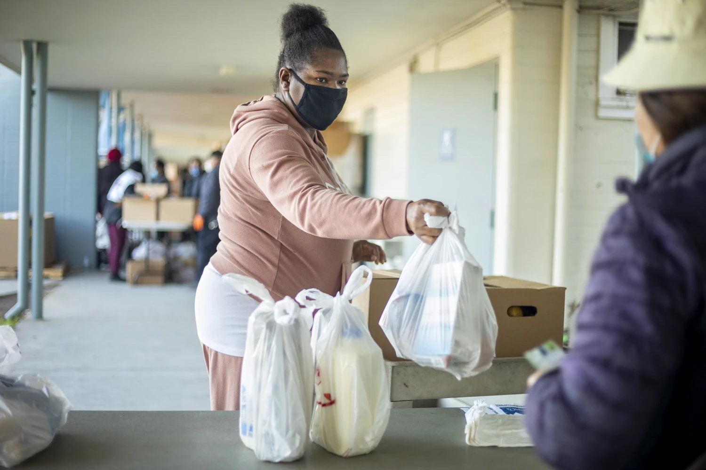

Discover the untold story of food insecurity in the heart of technology's paradise. Despite being the hub of technological innovation and economic wealth, thousands of residents struggle daily with hunger.
About the Issue
While Silicon Valley is often celebrated for its role in global tech advancements and high living standards, it also faces a severe, yet hidden, hunger crisis. Many residents find themselves choosing between paying for housing or food due to the region's high cost of living. This section sheds light on the stark realities of food insecurity amidst technological abundance.
Community Efforts

Local volunteers, like those pictured here, play a crucial role in addressing food scarcity. They support food drives and distribution efforts that provide essential items to those in need. Their dedication is a testament to the community spirit that thrives even in times of hardship.
Second Harvest Food Bank of Silicon Valley is a leader in the fight against hunger, providing food to more than a quarter of a million people every month. As one of the largest food banks in the nation, Second Harvest operates on the principle that food is a basic human right. They distribute nutritious groceries through a network of 300 partners at strategic locations across Santa Clara and San Mateo counties. This ensures that individuals and families in need receive their services with dignity and respect, despite their economic circumstances.
How You Can Help
Your support is crucial in the fight against hunger in Silicon Valley. Whether through donations, volunteering, or spreading awareness, your involvement makes a significant impact. Here's how you can make a difference and help ensure that no one in our community goes hungry.
.jpg)